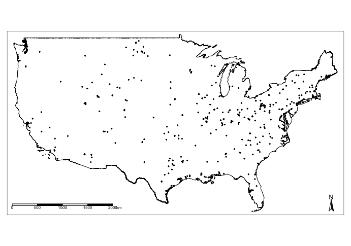
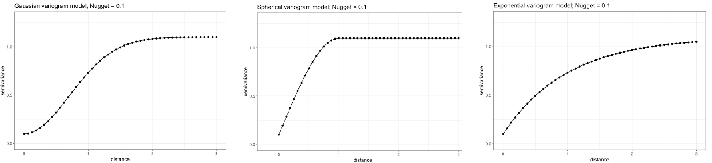
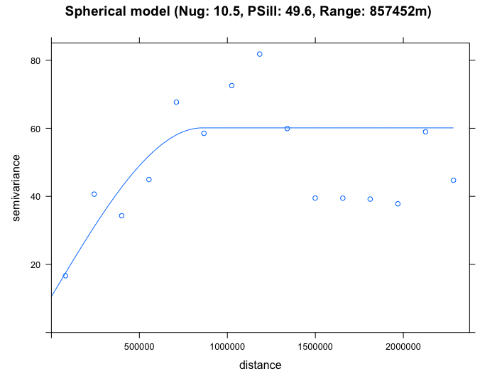
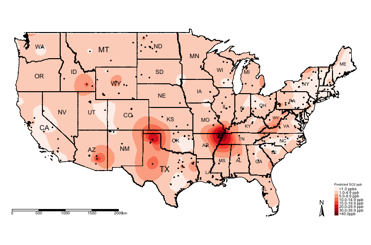
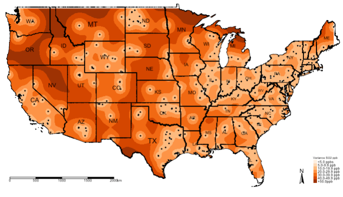

6 Geostatistical Modelling
6.1 Lecture recording (Length: 1h:06mins)
If the video does not play within this section, then try playing it from Microsoft Streams - you should be able to view it there using this [LINK].
Important Notes: Access to Microsoft Steams will may require use of your UCL institutional login details.
6.2 Introduction
Today, we will learn how to perform semivariogram analysis which can be used to create continuous predictive maps based on spatial interpolation technique called Kriging. In this session, we will investigate spatial variation in outcomes that are, in theory, spatially continuous; for example, the concentrations of ambient air pollutants such as Sulphur dioxide (\(SO_{2}\)) (a toxic gas emitted from sulphur rich fuels (i.e., coal, oil or diesel) when burnt) which can be present anywhere but in practice are only measured at specified point locations, such as air quality monitoring stations.
We will assess for the presence of spatial autocorrelation using semivariogram which is distance-based, which describes the correlation of a variable with itself through geographic space. Here, a Positive Autocorrelation exists when measurements close to one another are alike than they would be due to chance or through random sampling. The presence of autocorrelation for spatially continuous phenomena can be established by using semivariograms.
Estimates from a semivariogram can be are used from model construction for spatial interpolation across a study area, whereby values at unsampled locations are predicted from neighbouring sites. A popular form of interpolation, which is based on the spatial attribute’s outcome variable, is known as Kriging (a technique named after a South African engineer, Danie G. Krige (1919 to 2013)).
In you own time, see who Danie G. Krige is in this lecture [watch video]
6.2.1 Learning objectives
The US Environmental Agency have positioned air quality monitors for surveillance of over 100 different types of pollutants that exist as toxic gases, particulates and heavy metals. For Sulphur Dioxide (\(SO_{2}\)), there are 458 active air monitors that takes hourly readings for concentrations of \(SO_{2}\) (in parts per billion (pbb)). An annual estimate for \(SO_{2}\) was calculated for each station at its location. Car usage, urbanisation and social economic deprivation, alongside of other anthropogenic activities such as coal burning, across the USA increases the risk of elevated pollution of \(SO_{2}\).
Using geostatistical methods and taking into account of car usage, urbanisation and levels of deprivation - what areas in USA have higher concentrations of \(SO_{2}\) exceeding the annual average of 40 ppb which is a national safety limit for cause of concern?
Let’s use Kriging to find out!
6.2.2 Datasets & setting up the work directory
Before you begin do make sure to download all data by clicking here. Create a folder on called “Week 6” within your “GEOG0114” folder stored in the desktop of your personal computer. Make sure to extract all data from the zip folder and store it into “Week 6” folder. Open a new R script and set the work directory to Week 6’s folder.
For Windows, the work directory will be:
setwd("C:/Users/AccountName/Desktop/GEOG0114/Week 6")For MAC, the work directory will be:
setwd("/Users/AccountName/Desktop/GEOG0114/Week 6")6.2.3 Loading and installing packages
We will need to load the following packages:
sf: Simple Featurestmap: Thematic Mappingraster: Raster/gridded data analysis and manipulationsp: Package for providing classes for spatial data (points, lines, polygons and grids)
# Load packages using library() function
library("sf")
library("tmap")
library("raster")
library("sp")The above packages sf, tmap, raster & sp should have been installed in the previous session(s). We will need to install the following package:
gstat: provides functions for univariable and multivariable geostatistical analysis.geoR: provides additional functions for geostatistical and variogram analysis.
# Install the packages: gstat using the install.package()
install.packages("gstat")
install.packages("geoR")
# Load the packages with library()
library("gstat")
library("geoR")6.2.4 Loading datasets
Let us first import the quantitative data i.e., US 2019 SO2 Emissions data.csv into R/RStudio.
# Use read.csv() to import
datafile <- read.csv(file = "US 2019 SO2 Emissions data.csv", header = TRUE, sep = ",")NOTE: The description of the column names are as follows:
| Column Name | Description |
|---|---|
CountyRef |
The County & State for where the air quality monitors are located in US |
Longitude |
Longitude (in decimal degrees) |
Latitude |
Latitude (in decimal degrees) |
Mean_SO2 |
Annual Mean (ppb) concentrations of Ambient sulphur dioxide (\(SO_{2}\)) in 2019 |
- Shape file: US National border named
US Nation Border.shp - Shape file: US State border named
US State Borders.shp - Raster: US Car Usage (5000m resolution) named
US Prevalence of Car Usage 5km.tif - Raster: US Urbanisation Index (5000m resolution) named
US Urbanisation Index 5km.tif - Raster: US Socioeconomic Deprivation (5000m resolution) named
US Socioeconomic Deprivation 5km.tif
# Use read_sf() function to load shape file
US_Nation_Border_shp <- st_read("US Nation Border.shp")
US_State_Border_shp <- st_read("US State Borders.shp")6.2.5 Data preparation
There are a couple of things we need to do before proceeding with the analysis:
- The
datafileis a data frame object in RStudio’s memory, and not a spatial object. We need to coerce into a spatialsfobject - The shapefiles for
US Nation Border.shp&US State Borders.shpare in a different CRS called Spherical Mercator 3857 which measures distance in meters and not in decimal degrees. We need to transform thelongitudeandlatitudeof our stations which are in decimal degrees to the CRS of Spherical Mercator 3857
# Coerce the spreadsheet into a sf object
# First tell R that it’s coordinates are currently in decimal degrees (i.e., WGS84 'crs = 4326') before the transformation
datafile_sf <- st_as_sf(datafile, coords = c("Longitude", "Latitude"), crs = 4326)
# Now apply the transformation from WGS84 to Mercator i.e., = 3857
datafile_sf_prj <- st_transform(datafile_sf, 3857)
# Inspect the details
st_crs(datafile_sf_prj)The code chunk below generates an empty map with the tmap functions. It shows just the border of USA and the point locations for the air quality monitoring stations superimposed.
tm_shape(US_Nation_Border_shp) + tm_polygons(alpha = 0, border.col = "black") +
tm_shape(datafile_sf_prj) + tm_dots() +
tm_scale_bar(position = c("left","bottom")) +
tm_compass(position = c("right", "bottom"))
6.3 Semivariogram analysis
Semivariograms describe how data are related with distance by plotting the semivariance against the separation distance, known as the experimental or empirical semivariogram. The semivariance is defined as half the average squared difference between points separated by some distance h. As the separation distance h between samples increase, we would expect the semivariance to also increase (again, because near samples are more similar than distant samples).

In the generic semivariogram shown above, there are three important parameters:
- Sill: The maximum semivariance value observed, and it indicates the threshold for values beyond (i.e., flatline) which there is no spatial autocorrelation. NOTE: the Partial Sill is a value calculated by taking the difference between the Sill and Nugget (i.e., Partial Sill = Sill - Nugget)
- Range: The maximum separation distance h at which we will expect to find evidence of spatial autocorrelation. A separation distance beyond the range samples are no longer correlated.
- Nugget: This describes the variance of the measurement error combined with spatially uncorrelated variations at distances shorter than the sample spacing, namely noise in the data. The larger the nugget relative to the sill, the less spatial dependence there is in the data and less useful Kriging will be.
IMPORTANT NOTES: Two important assumptions of a basic semivariogram are that the spatial process under investigation are: i.) stationary, i.e., the spatial autocorrelation between the measurements of same variables in a given area is the same for all locations; and ii.) isotropic, spatial autocorrelation is the same in every direction. If the autocorrelation differs by direction, it is termed as anisotropic.
To be used in Kriging, a semivariogram plot (akin to the above image) must be generated to estimate the 3 parameters (i.e., sill, nugget & range) from the points termed experimental or empirical semivariogram. These are used as initial values to fit a modelled or theoretical semivariogram which can be in one of three major forms:
- Gaussian Model (Left)
- Spherical Model (Center)
- Exponential Model (Right)

Once the modelled semivariogram has been defined, it can be used in Kriging.
6.3.1 Plotting the Empirical Semivariogram
Use the function variogram() to create the object for plotting the empirical variogram
# coerce datafile_sf_prj to be a 'sp' spatial dataframe object as it's
# ---variogram does not use 'sf' objects
# ignore warning message
datafile_sp_prj <- as(datafile_sf_prj, "Spatial")
# use variogram() function to compute the semivariance with a null model Mean_SO2 as outcome
SO2_emp.variogram <- variogram(Mean_SO2~1, datafile_sp_prj)
# Compute the object to reveal a table
SO2_emp.variogramIMPORTANT NOTES: np in the output is the number of paired considered within the separation distance dist; gamma is the averaged semivariance for the number of paired points within the separation distance dist.
Let us plot these values to see the empirical semivariogram
plot(SO2_emp.variogram)
From the output (i.e., plot and table), we should note the approximate values for the partial sill, nugget and range.
- The
nuggetis roughly 17 (i.e. base on startinggammavalue from the table). - The
rangeis roughly 1180000 meters (i.e. base on peak value forgammaand it’s correspondingdist). - The
partial sillis 65. This is derived from the peak value forgammasubtracted by thenugget(82 - 17 = 65).
These initial values give us an idea of what to expect when we proceed to fit a theoretical semivariogram using the fit.variogram(). It will help us to generate the fitted models.
6.3.2 Plotting the Theoretical Semivariogram
We are going to fit a model to the empirical semivariogram in order to determine the appropriate function for Kriging (i.e., spherical (Sph), exponential (Exp) or gaussian (Gau)).
We will start fitting the various models:
# Fit exponential
exp_SO2_emp.variogram <- fit.variogram(SO2_emp.variogram, model = vgm(65, "Exp", 1180000, 17))
exp_SO2_emp.variogram
plot(SO2_emp.variogram, exp_SO2_emp.variogram, main = "Exponential model (Nug: 3.6, PSill: 55.9, Range: 296255m)")
# Fit Spherical
sph_SO2_emp.variogram <- fit.variogram(SO2_emp.variogram, model = vgm(65, "Sph", 1180000, 17))
sph_SO2_emp.variogram
plot(SO2_emp.variogram, sph_SO2_emp.variogram, main = "Spherical model (Nug: 10.5, PSill: 49.6, Range: 857452m)")
# Fit gaussian
gau_SO2_emp.variogram <- fit.variogram(SO2_emp.variogram, model = vgm(65, "Gau", 1180000, 17))
gau_SO2_emp.variogram
plot(SO2_emp.variogram, gau_SO2_emp.variogram, main = "Gaussian model (Nug: 12.8, PSill: 39.1, Range: 244807m)")
By eyeballing the images - it difficult to discern whether the exponential or spherical model provides a better fit to the empirical semivariogram. We can use the fit.variogram() function to determine which is the best model amongst them.
# select the best model
best_SO2_emp.variogram <- fit.variogram(SO2_emp.variogram, model = vgm(c("Exp", "Gau", "Sph")))
best_SO2_emp.variogramFrom the output (see column which says model and row 2 it highlights "Exp"), it shows that the exponential model is the best fit with a nugget = 3.6, Partial Sill = 55.9 and Range = 296255m. We therefore select the exponential model in our Kriging to make the spatial prediction for \(SO_{2}\). Lets proceed to Krige.
IMPORTANT NOTES: The interpretation is as follows: the nugget in the exponential model is smaller than the other proposed models. It is small which is also an indication of evidence of larger spatial dependence in the concentrations for \(SO_{2}\) across sampling sites in USA; A separation distance with values beyond 296255m (where it curve starts to plateau) and beyond the semivariance’s threshold where it flat lines (sill of 59.5 (i.e., 55.9 + 3.6)) - there should expect that the spatial autocorrelation in the observed levels of \(SO_{2}\) are not present anymore.
6.4 Kriging modelling (null)
6.4.1 Building a blank raster template
Let us create a template raster for interpolation. The extent of the raster template should based on the points. We are going to make the resolution of grid be at 5000m by 5000m (5km by 5km) accordingly.
RasterTemplate <- raster(datafile_sp_prj)
res(RasterTemplate) <- 5000Next, declare template as a spatial grid
grid.interpolation <- as(RasterTemplate, 'SpatialGrid')6.4.2 Implementing the spatial interpolation on blank template using Kriging
Now, we are going to use the parameters from the exponential theoretical semivariogram model to interpolate the concentrations of ambient SO2 for the entire study region
modelKrigingExp <- gstat(formula = Mean_SO2~1, locations = datafile_sp_prj, model = exp_SO2_emp.variogram)The results are stored in modelKrigingExp object. Lets add the results of the interpolation to our grid template using the predict() function
# this may take roughly 5mins
Kriged_SO2 <- predict(modelKrigingExp, grid.interpolation)The above analysis produces two separate rasters: i.) Predicted \(SO_{2}\) and ii.) Variation in \(SO_{2}\). Let export the results and make some visualisation using the tmap functions
6.4.3 How to export the results as .tiff format thematic visualisation in tmap
Now, save both the prediction and variance a multi-layer raster (a ‘brick’ raster):
brickedKriged_SO2_Results <- brick(Kriged_SO2)We can save them individually from the multi-layer raster as follows:
# Separate the rasters accordingly
exp.prediction <- raster(brickedKriged_SO2_Results, layer = 1)
exp.variance <- raster(brickedKriged_SO2_Results, layer = 2)
# save the output locally on your computer
writeRaster(exp.prediction, "Predicted SO2 levels in USA.tif", format="GTiff", overwrite = TRUE)
writeRaster(exp.variance, "Variance SO2 levels in USA.tif", format="GTiff", overwrite = TRUE)6.4.4 Thematic visualisation of raster data using tmap
We will need to perform a couple of steps before visualisation. First, we will need to mask the values of the raster predictions were made outside of US Border’s region. To do this, we use the mask() function:
# mask values of raster outside regions of US Border
US_Nation_Border_sp_shp <- as(US_Nation_Border_shp, "Spatial")
exp.prediction_masked <- mask(exp.prediction, US_Nation_Border_shp)Next, we are going to make the raster image sit perfectly sit within the plot’s frame using the country’s bounding box or extent. We can extract the bounding box by using st_bbox() function on the US_Nation_Border_shp shape file object, this basically gives us the extent of the region.
frameExtent <- st_bbox(US_Nation_Border_shp)
frameExtent> frameExtent
xmin ymin xmax ymax
-13885235 2819925 -7452828 6340334IMPORTANT NOTES: The above values are essentially the coordinates that form a rectangle, a rectangular area which the USA country is bounded within. We are using this as the full plot region for the raster to prevent parts of the image not showing.
Now, let us visualise the predictions:
tm_shape(exp.prediction_masked, bbox = frameExtent) + tm_raster(title = "Predicted SO2 ppb", style = "cont", palette = "Reds") +
tm_shape(US_State_Border_shp) + tm_polygons(alpha = 0, border.col = "black") +
tm_text("STUSPS", size = "AREA") +
tm_shape(datafile_sf_prj) + tm_dots() +
tm_scale_bar(position = c("left","bottom")) +
tm_compass(position = c("right", "bottom")) +
tm_layout(frame = FALSE, legend.title.size = 0.5, legend.text.size = 0.5, legend.position = c("right", "bottom"))
The above shows the predicted concentrations of ambient \(SO_{2}\); however, the predicted surface is very smooth and it difficult to see the spatial patterns. One technique, which is sometimes useful, for raster data is to reclassify the pixels to ordered categories i.e., zones instead of pixel-point estimates.
We could reclassify the continuous values stored in the grids/pixels into discrete values using the following scheme:
- 0 =
"< 1.0 ppb" - 1 =
"1.0-4.9 ppb" - 2 =
"5.0-9.9 ppb" - 3 =
"10.0-14.9 ppb" - 4 =
"15.0-19.9 ppb" - 5 =
"20.0-29.9 ppb" - 6 =
"30.0-39.9 ppb" - 7 =
"+40.0 ppb"
You can do this by using the following code:
# Create a vector for the reclassification -i.e., 1st row captures values
# --- between 0 and below 1 to reclassify a pixel as 0
# While the 2nd row in this vector captures values between 1 and below 5 to
# --- reclassify a pixel as 1 and so on and so forth
reclassifyRaster <- c(0,1,0,
1,5,1,
5,10,2,
10,15,3,
15,20,4,
20,30,5,
30,40,6,
40,70,7)
# Then store the values into a matrix
reclassifyRaster_Mat <- matrix(reclassifyRaster, ncol=3, byrow=TRUE)
reclassifyRaster_MatNow, apply the matrix to the raster object to reclassify the pixels accordingly using the reclassify() function:
exp.prediction_masked_rec <- reclassify(exp.prediction_masked, reclassifyRaster_Mat)Now, lets visualise the predictionszones:
tm_shape(exp.prediction_masked_rec, bbox = frameExtent) + tm_raster(title = "Predicted SO2 ppb", style = "cat", palette = "Reds", labels = c("<1.0 ppbs","1.0-4.9 ppb","5.0-9.9 ppb", "10.0-14.9 ppb" , "15.0-19.9 ppb", "20.0-29.9 ppb", "30.0-39.9 ppb","+40.0ppb")) +
tm_shape(US_State_Border_shp) + tm_polygons(alpha = 0, border.col = "black") +
tm_text("STUSPS", size = "AREA") +
tm_shape(datafile_sf_prj) + tm_dots() +
tm_scale_bar(position = c("left","bottom")) +
tm_compass(position = c("right", "bottom")) +
tm_layout(frame = FALSE, legend.title.size = 0.5, legend.text.size = 0.5, legend.position = c("right", "bottom"))
You can visualise the variance:
# mask values of raster outside regions of US Border
exp.variance_masked <- mask(exp.variance, US_Nation_Border_sp_shp)
tm_shape(exp.variance_masked, bbox = frameExtent) + tm_raster(title = "Variance SO2 ppb", style = "cont", palette = "Oranges") +
tm_shape(US_State_Border_shp) + tm_polygons(alpha = 0, border.col = "black") +
tm_text("STUSPS", size = "AREA") +
tm_shape(datafile_sf_prj) + tm_dots() +
tm_scale_bar(position = c("left","bottom")) +
tm_compass(position = c("right", "bottom")) +
tm_layout(frame = FALSE, legend.title.size = 0.5, legend.text.size = 0.5, legend.position = c("right", "bottom"))
Again, it will be better to reclassify the raster for the variance to see where the model predicts the SO\(_2\) with lower and high errors. We can use the reclassify() accordingly. Note that the lowest and highest estimated variance is 4.435438 and 57.59579, respectively. Let us reclassify the variance raster using the following scheme:
- 0 =
"< 5.0 ppb" - 1 =
"5.0-9.9 ppb" - 2 =
"10.0-19.9 ppb" - 3 =
"20.0-29.9 ppb" - 4 =
"30.0-39.9 ppb" - 5 =
"40.0-49.9 ppb" - 6 =
"+50.0 ppb"
Here is the code:
reclassifyRaster_var <- c(0,5,0,
5,10,1,
10,20,2,
20,30,3,
30,40,4,
40,50,5,
50,60,6)
reclassifyRaster_Mat_var <- matrix(reclassifyRaster_var, ncol=3, byrow=TRUE)
reclassifyRaster_Mat_var
exp.variance_masked_rec <- reclassify(exp.variance_masked, reclassifyRaster_Mat_var)
tm_shape(exp.variance_masked_rec, bbox = frameExtent) + tm_raster(title = "Variance SO2 ppb", style = "cat", palette = "Oranges", labels = c("<5.0 ppbs","5.0-9.9 ppb","10.0-19.9 ppb", "20.0-29.9 ppb" , "30.0-39.9 ppb", "40.0-49.9 ppb","+50.0ppb")) +
tm_shape(US_State_Border_shp) + tm_polygons(alpha = 0, border.col = "black") +
tm_text("STUSPS", size = "AREA") +
tm_shape(datafile_sf_prj) + tm_dots() +
tm_scale_bar(position = c("left","bottom")) +
tm_compass(position = c("right", "bottom")) +
tm_layout(frame = FALSE, legend.title.size = 0.5, legend.text.size = 0.5, legend.position = c("right", "bottom"))
IMPORTANT NOTES: The above example was a null model. We can include risk factors as adjustments for the prediction. The below code shows you how to incorporate other variables in the analysis. We will use the other raster data sets for urbanisation, deprivation and car usage as adjustments in the Kriging model.
6.5 Kriging modelling (non-null)
The code is a repeat of the above but with regression covariate adjustment.
library("sf")
library("sp")
library("raster")
library("tmap")
library("gstat")
library("geoR")
datafile <- read.csv(file = "US 2019 SO2 Emissions data.csv", header=TRUE, sep=",")
US_Nation_Border_shp <- st_read("US Nation Border.shp")
US_State_Borders_shp <- st_read("US State Borders.shp")
# Coerce the spreadsheet into a sf object
# First tell R that it’s coordinates are currently in decimal degrees (i.e., WGS84 'crs = 4326') before the transformation
datafile_sf <- st_as_sf(datafile, coords = c("Longitude", "Latitude"), crs = 4326)
# Now apply the transformation from WGS84 to Mercator i.e., = 3857
datafile_sf_prj <- st_transform(datafile_sf, 3857)
# Inspect the details
st_crs(datafile_sf_prj)
# Step 1: Load rasters. These are the covariates we will use in the gstat() function for the kriging regression
US_urbanisation <- raster("US Urbanisation Index 5km.tif")
US_SVI <- raster("US Socioeconomic Deprivation 5km.tif")
US_CarUsage <- raster("US Prevalence of Car Usage 5km.tif")
# ignore that stupid warning message as its related to outdated 'rgdal & rgeos'. All raster are in the CRS Mercator 3857
# Step 2: Stack the three rasters together by using the stack() function
predictors <- stack(US_urbanisation, US_SVI, US_CarUsage)
# Step 3: from the stacked data extract the raster values on the points of pollution stations using the extract() function
predictors.values <- extract(predictors, datafile_sp_prj)
# Step 4: Stitch the extraction to the spatial point data frame using the cbind() "column bind" function
datafile_sp_prj@data <- cbind(datafile_sp_prj@data, predictors.values)
# You can view the dataframe to see the raster values. What has happened is we extracted the overlapping raster pixels on
# those pollution stations and assuming those are the levels of urbanisation, deprivation and car usage at those points for
# which the SO2 levels are observed.
View(datafile_sp_prj@data)
# Step 5: Linear Regression model to determine which variables are worth to be included in the Kriging model. If the turn out
# to be statistical significant (i.e., p < 0.05). Then include to include in the kriging.
lm.model <- lm(Mean_SO2 ~ US_Urbanisation_Index_5km + US_Socioeconomic_Deprivation_5km + US_Prevalence_of_Car_Usage_5km, data = datafile_sp_prj@data)
summary(lm.model)
# all variables are statistically significant. According to this model urbanisation and car usage marginally decreases SO2 levels,
# while areas of higher deprivation yields higher levels of SO2. Include all variables to the Kriging model since they are
# significant.
# Step 6: use variogram() function to compute the semivariance with variable in the model
SO2_adj_emp.variogram <- variogram(Mean_SO2 ~ US_Urbanisation_Index_5km + US_Socioeconomic_Deprivation_5km + US_Prevalence_of_Car_Usage_5km, datafile_sp_prj)
SO2_adj_emp.variogram
plot(SO2_adj_emp.variogram)
# Step 7: Determine best model
best_SO2_adj_emp.variogram <- fit.variogram(SO2_adj_emp.variogram, model = vgm(c("Exp", "Gau", "Sph")))
best_SO2_adj_emp.variogram
plot(SO2_adj_emp.variogram, best_SO2_adj_emp.variogram, main = "Best Model: Exponential (Nug: 5.63, PSill: 49.4, Range: 293891.2m)")
# HERE ARE THE CORRECTIONS
# Step 8: Here is where we need to insert the raster values and not the points. In the previous iteration, I mistakenly used the
# point verison of the car usage data and adapted the code without verifying it to work. I sincerely apologise for this oversight!
modelKrigingExp_adj <- gstat(formula = Mean_SO2~US_Urbanisation_Index_5km + US_Socioeconomic_Deprivation_5km + US_Prevalence_of_Car_Usage_5km, locations = datafile_sp_prj, model = best_SO2_adj_emp.variogram)
# Take the stacked rasters for car usage, urbanisation and socioeconomic deprivation and convert it to a grid template
# Here, we need their values stored inside that grid template, to which we will apply the kriging model to make the prediction
# while at the same time make adjustments for their value.
# we created the stacked into the 'predictors' object
predictors.grid <- as(predictors, "SpatialGridDataFrame")
# Last time it was just "SpatialGrid" because it was empty. This grid has values and thus not empty
# so we call it "SpatialGridDataFrame"
# Step 9: We can now do the predictions over the SpatialGridDataFrame
Kriged_SO2_adj <- predict(modelKrigingExp_adj, predictors.grid)
# Brick the layer in order to separate the estimated prediction and variance accordingly
brickedKriged_SO2_Results_adj <- brick(Kriged_SO2_adj)
exp.prediction_adj <- raster(brickedKriged_SO2_Results_adj, layer = 1)
exp.variance_adj <- raster(brickedKriged_SO2_Results_adj, layer = 2)
# Step 10: Masking the prediction and reclassifying the layer
# You can mask the prediction with the outline of USA
US_Nation_Border_sp_shp <- as(US_Nation_Border_shp, "Spatial")
exp.prediction_adj_masked <- mask(exp.prediction_adj, US_Nation_Border_sp_shp)
# Run this to see minimum and maximum value.
exp.prediction_adj_masked
# You can see there are negative value as some of the prediction for SO2.
# Lets reclassify these as an invalid prediction with value -1
reclassifyRaster <- c(-2,0,-1,
0,1,0,
1,5,1,
5,10,2,
10,15,3,
15,20,4,
20,30,5,
30,40,6,
40,70,7)
reclassifyRaster_Mat <- matrix(reclassifyRaster, ncol=3, byrow=TRUE)
reclassifyRaster_Mat
# Apply the categories to masked layer in order to reclassify the predictions that were adjusted those 3 variables
exp.prediction_adj_masked_rec <- reclassify(exp.prediction_adj_masked, reclassifyRaster_Mat)
# Create the labels for the 'reclassifyRaster_Mat" object
SO2LevelsCategories <- c("Invalid","<1.0 ppbs","1.0-4.9 ppb","5.0-9.9 ppb", "10.0-14.9 ppb" , "15.0-19.9 ppb", "20.0-29.9 ppb", "30.0-39.9 ppb","+40.0ppb")
# Finally, we going to force the colour schemes we want.
# We want the "Invalid" category to have a grey colour; and the rest for lowest category
# ie., "<1.0ppbs" to "+40.0ppb" to be increase red intensities"
# Force the colorbrewer schemes grey = #636363
# Force the reds (from light red down to solid-dark-red) = #fee5d9, #fcbba1, #fc9272, #fb6a4a, #ef3b2c, #cb181d, #99000d
# Create the colour scheme for the above 'SO2LevelsCategories'
HackedColourPalette <- c("#636363", "#fee5d9", "#fcbba1", "#fc9272", "#fb6a4a", "#ef3b2c", "#cb181d", "#99000d")
# Step 11: Visual the adjusted prediction from Universal Kriging Regression
tm_shape(US_Nation_Border_shp) +
tm_polygons(alpha = 0, border.col = "black") + # add base map of borders here
tm_shape(exp.prediction_adj_masked_rec) +
tm_raster(title = "Predicted adjusted SO2 ppb", style = "cat", palette = HackedColourPalette, labels = SO2LevelsCategories) +
tm_shape(US_State_Borders_shp) + tm_polygons(alpha = 0, border.col = "black") +
tm_text("STUSPS", size = "AREA") +
tm_shape(datafile_sf_prj) + tm_dots() +
tm_scale_bar(position = c("left","bottom")) +
tm_compass(position = c("right", "bottom")) +
tm_layout(frame = FALSE, legend.title.size = 0.5, legend.text.size = 0.5)
6.6 References (see reading list)
- Technical Document: [R Programming] Gurpreet Singh and Biju Soman, (2020), Spatial Interpolation using Kriging in R. Download here
- Technical Document: [R Programming] Fernando Antonanzas-Torres, (2014), Geostatistics examples in R: Ordinary Kriging, Universal Kriging and Inverse Distance Weighted. Download here
- Technical Document: [R Programming] Adela Volfova and Martin Smejkal, (2012), Geostatistical Methods in R. Download here
- Book: [R Programming] Roger S. Bivand, Edzer J. Pebesma and Virgilio Gomez-Rubio, (2008), Applied Spatial Data Analysis with R, Chapter 8: Interpolation and Geostatistics, pages 191 to 235.
- Book: [R Programming] Michael Dorman, (2014), Learning R for Geospatial Analysis, Chapter 8: Spatial Interpolation of Point Data, pages 241 to 279.
- Book: [Theory] Christopher D. Lloyd, (2010), Spatial Data Analysis: An Introduction for GIS Users, Chapter 9: Spatial Interpolation (Section 9.7. Ordinary Kriging), pages 140 to 150.
6.7 Data Sources
- The pollution data was obtained from the United States Environmental Protection Agency (EPA) Click Here
- Spatial data concerning car usage in the US was sourced from the ACS Vehicle Availability Variables project Click Here. You would need to have Online ArcGIS account to access the resources.
- US raster data for Social Vulnerability Index 2018 and Urbanization Index (2015) were sourced from the NASA Socioeconomic Data & Applications Center (SEDAC) Click Here. NOTE: Registeration required for free access to raster records